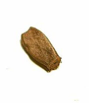
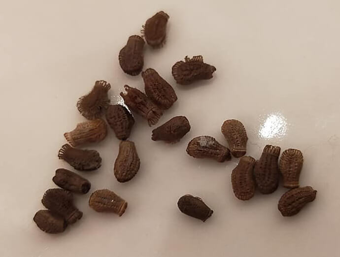

Reproduction
RAMULUS
Reproduction: parténogenèse
Incubation:
Ils sont pondus par projection sur le sol et éclosent généralement au bout de 2 mois. Personnellement, je les laisse sur le sol constitué d'un terreau très légèrement humide. Je conseille d'enlever les feuilles jaunies ou fanées pour éviter les éventuelles moisissures.
Développement:
Les naissances se font généralement entre 4 et 5 mois après la ponte. Je recommande une température ambiante de 18 à 25 °C dans une atmosphère aérée, lumineuse avec une humidité ambiante. Je pulvérise de l'eau 3 à 4 fois par jour et cela suffit amplement. Leur durée de vie est de 5 à 7 mois même si j'en ai déjà eus qui ont vécu bien plus.
PHYLLIUM
Reproduction: Si des oeufs ne sont pas fécondés, c'est alors de la parténogenèse
Incubation:
Les œufs prennent de 3 à 4 mois pour éclore. Je recommande une température de +- 24 °C. Les femelles peuvent pondre 2 à 3 œufs par jour en moyenne. Les œufs ont un aspect lisse de couleur marron clair quand il vient d'être pondu.
Placés en présence d'humidité, leur couleur fonce un peu et des petits cils vont se développer sur le contour de l'œuf dans les 24 h.
Un phénomène que j'ai pu remarquer, c'est que toutes les éclosions avaient lieu le matin entre 7 h et 12 h, rarement après, jamais la nuit.
Développement:
Ils se développent très bien à une température de 22 °C.
Il faut une atmosphère humide, mais pas trop non plus, lumineuse et aérée.
Dès la naissance, les jeunes phyllies boivent volontiers après l'éclosion, mais ne les noyez pas non plus ! Utilisez un vaporisateur. Personnellement, j'utilise un brumisateur, de l'eau de source que j'ai laissé décanter du chlore pendant un peu plus de 24h.